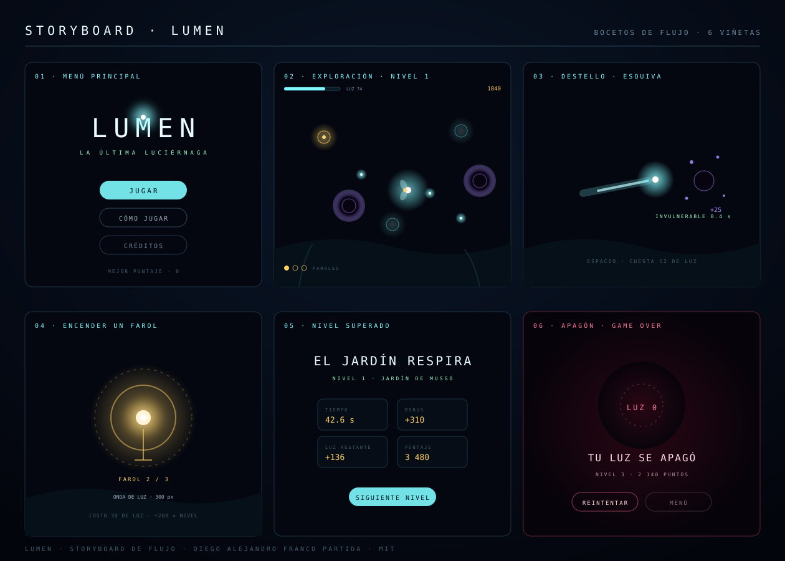

Storyboard — LUMEN
Seis viñetas que resumen el flujo completo de una partida: menú, exploración, combate, objetivo, recompensa y derrota.

1. Menú principal
| Campo |
Detalle |
| Plano |
Pantalla completa, fondo nocturno con luciérnagas de fondo |
| Acción |
Lumen parpadea sobre el título; el jugador elige Jugar, Cómo jugar o Créditos |
| UI |
Título LUMEN, subtítulo, tres botones y récord local |
| Duración |
Libre |
| Nota de dirección |
La luz del título respira con la misma frecuencia que el aura del juego; la interfaz desaparece al empezar |
2. Exploración — Nivel 1
| Campo |
Detalle |
| Plano |
Vista cenital fija, 960 × 600 |
| Acción |
Lumen se mueve entre chispas; dos sombras entran por los bordes; tres faroles esperan apagados |
| UI |
Nivel, barra de luz, puntaje, tres puntos de farol |
| Duración |
40–90 s |
| Nota de dirección |
La luz del jugador es la única fuente de iluminación real; el fondo se intuye, no se muestra |
3. Destello — esquiva y riesgo
| Campo |
Detalle |
| Plano |
Detalle del jugador en movimiento |
| Acción |
Lumen pulsa Espacio y cruza a una sombra; la sombra estalla en partículas violetas |
| UI |
Texto flotante «+25», estela de luz |
| Duración |
0.16 s de impulso, 1.05 s de enfriamiento |
| Nota de dirección |
La estela debe leerse como una decisión, no como un efecto gratuito: cuesta 12 de luz |
4. Encender un farol
| Campo |
Detalle |
| Plano |
Farol en el centro, onda expansiva |
| Acción |
Lumen llega con 30+ de luz; el farol se enciende y barre las sombras en 300 px |
| UI |
«FAROL 2 / 3», «+400», puntos de farol actualizados |
| Duración |
0.75 s de onda |
| Nota de dirección |
Es el momento más luminoso del nivel: flash ámbar, acorde mayor y sacudida suave |
5. Nivel superado
| Campo |
Detalle |
| Plano |
Panel centrado sobre el mundo congelado |
| Acción |
Se muestran tiempo, bonus de tiempo, luz restante y puntaje total |
| UI |
Botón Siguiente nivel |
| Duración |
Libre (el jugador decide) |
| Nota de dirección |
La música se detiene; el silencio hace que el acorde de subida de nivel destaque |
6. Apagón — Game Over
| Campo |
Detalle |
| Plano |
Pantalla teñida de rosa, el mundo se oscurece |
| Acción |
La luz llega a 0; Lumen desaparece en partículas |
| UI |
Puntaje, récord, nivel alcanzado, Reintentar y Menú |
| Duración |
Libre |
| Nota de dirección |
No hay castigo: el récord se conserva y el mensaje invita a volver |
Flujo de pantallas
MENÚ ──▶ INTRO (3.2 s) ──▶ JUEGO ──┬──▶ NIVEL SUPERADO ──▶ INTRO (siguiente)
▲ │
│ ├──▶ VICTORIA (nivel 5)
│ │
└────────────── PAUSA ◀───────────┴──▶ GAME OVER ──▶ REINTENTAR
Transiciones
| De |
A |
Recurso |
| Menú |
Intro |
Fundido del overlay (0.28 s) + música del nivel |
| Intro |
Juego |
Cuenta regresiva de 3.2 s o botón Empezar ya |
| Juego |
Pausa |
Overlay con blur; el mundo se congela |
| Juego |
Nivel superado |
Flash ámbar, onda del último farol |
| Juego |
Game Over |
Flash rosa, sacudida de 14 px, silencio musical |
| Nivel superado |
Intro |
Fundido y nueva nota raíz |
Bocetos y principios de cámara
- Encuadre: siempre completo; nada importante queda fuera de pantalla.
- Escala: Lumen mide 22 px de diámetro; un farol, 36 px; una sombra, 30 px. La proporción hace que el jugador se sienta pequeño.
- Lectura: el 80 % de la pantalla es oscuridad; el 20 % restante es información.
- Movimiento: la cámara no se mueve; la sensación de velocidad viene de la estela del jugador y del paralaje de las motas.
Relación con el GDD
Este storyboard corresponde a las secciones 3, 6, 10 y 11 del GDD. Las posiciones de los faroles del nivel 1 están en el mapa.